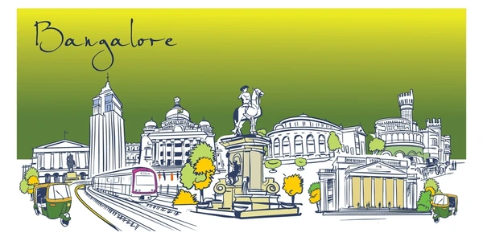

WebSciX 2026
20 Years of Web Science: Navigating the Era of Generative and Agentic AI
WebSciX India
WebSciX India is a satellite event of the ACM Web Science Conference, dedicated to advancing the interdisciplinary study of the Internet, World Wide Web (WWW), and Artificial Intelligence (AI) and their impact on human lives in India and surrounding regions. WebSciX builds upon the Web Science for Development (WS4D) series of events conducted in India since 2019.
Web Science integrates disciplines such as computer science, sociology, economics, and policy studies to explore the socio-technical dynamics of digital ecosystems. WebSciX India aims to build a regional community of experts to investigate these dynamics within India's unique socio-cultural, economic, and technological context, proposing innovative technologies and interventions to address local challenges.
With over 800 million Internet users as of 2025, India's digital landscape is shaped by its 1.4 billion population, diverse cultures, and rapid technological adoption. India has also made great strides in innovative use of these technologies including digital identity, payments, technology enhanced education, and a host of web enabled services offered by the state and private players. However, challenges like digital divides, misinformation, and privacy concerns remain, demanding localized Web Science approach.
Scope and Focus
- Multilingual web and rural connectivity
- AI impact on education, commerce, governance
- Inclusive digital ecosystems
🌆 Bengaluru, Karnataka ,India

India's Silicon Valley - Perfect Host for WebSciX 2026
Bangalore, the technology capital of India, is home to over 7,000 tech startups, 25% of India's unicorn companies, and hosts the largest concentration of AI/ML researchers in the country. With its thriving tech ecosystem and position as India's digital innovation hub, Bangalore is the ideal venue for exploring Web Science and AI's impact on society.
- Tech Innovation Hub: Home to Google, Microsoft, Amazon R&D centers and India's largest AI research community
- Startup Capital: 40% of India's SaaS unicorns and 1/3rd of all tech startups
- Academic Excellence: Hosts IIIT-Bangalore, IISc, and numerous premier tech institutions
- Diverse Talent Pool: 1.5 million IT professionals driving digital transformation
- Policy Leadership: Karnataka's AI policy framework influences national digital strategy
📍 Conference Venue
IIIT Bangalore, India
26/C Electronics City Phase 1, Hosur Rd, Bengaluru, Karnataka 560100
356CW • 378 • NICE 8 • NICE 10
Electronics City stop
Infosys Konappana Agrahara
(Purple Line) • 2 km • 8 mins
Bangalore International Airport (BLR)
45 km • 75-90 mins drive
Uber/Ola 24/7
₹400-600 from airport
₹100-150 from metro
✅ Free campus WiFi • Dining halls • Ample parking • 24/7 security